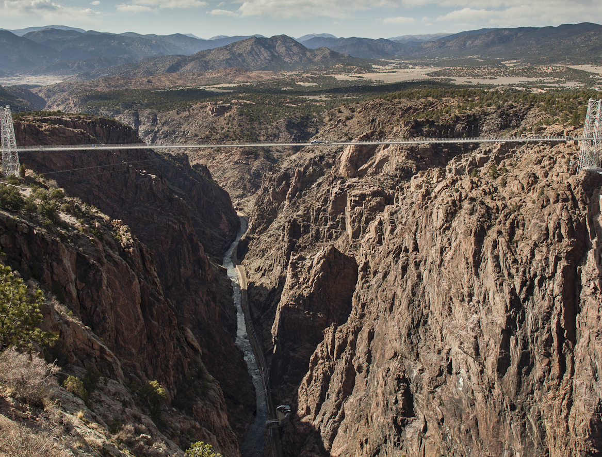
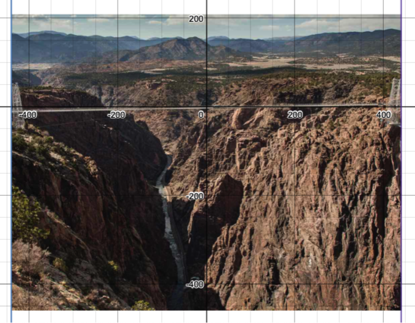
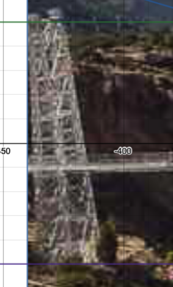
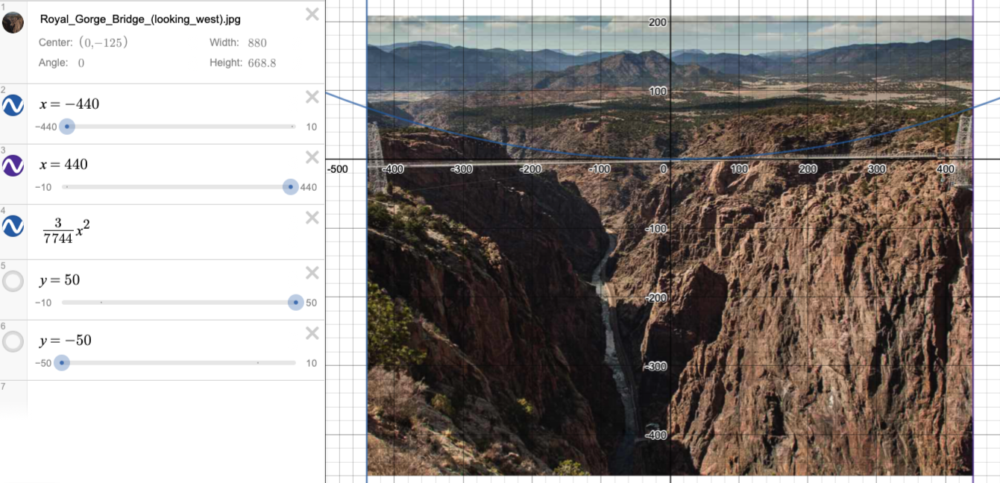

Curve Fitting
Step 1:
Crop the image’s width to the edges of the towers

Step 2:
Insert photo in Desmos, and set width to 880 (the length of the main span, or the distance between the two towers) and scale the height accordingly. The vertical lines x=440 and x=-440 may help.
Step 3:
Align the image such that the x-axis is the walkway. The reason for choosing the walkway over the Arkansas River as the baseline is because the river cannot be clearly defined in the photograph used.

Step 4:
Noting that the towers on the graph span from approximately y=-50 to y=50, and hence approximating the height of the towers as roughly symmetrical about the x-axis/walkway, the height of the tower from the walkway to the apex is estimated as the half of the given value, or 150m/2=75m.

Step 5:
Since the y-axis is the axis of symmetry of the parabola, the x-axis is the walkway, and the graph is concave up, the minimum point can be determined as (0, 0).
Step 6:
Hence, the coefficients b and c for the general quadratic equation ax^2+bx+c can be determined as 0.
Step 7:
The apex of the right tower, (440, 75), is on the parabola and thus the coefficient a can be determined:
Step 8:
Therefore, the general equation for the curve with its base at the runway is
